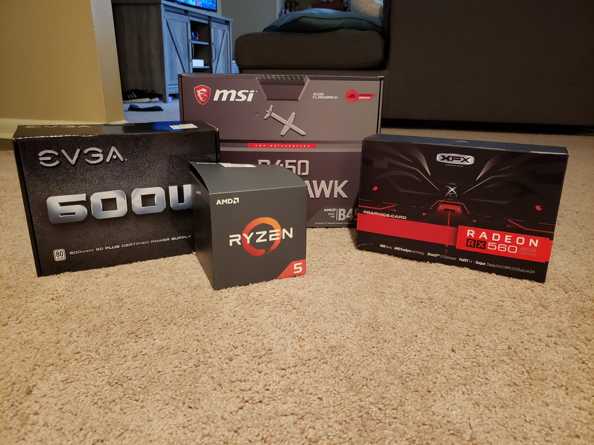
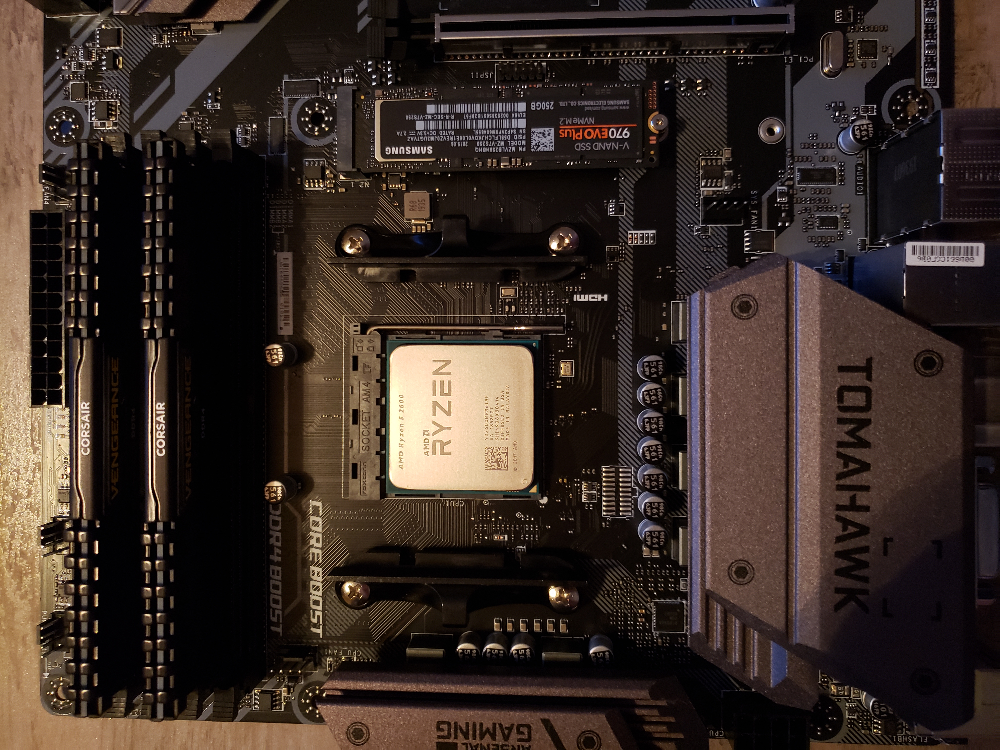
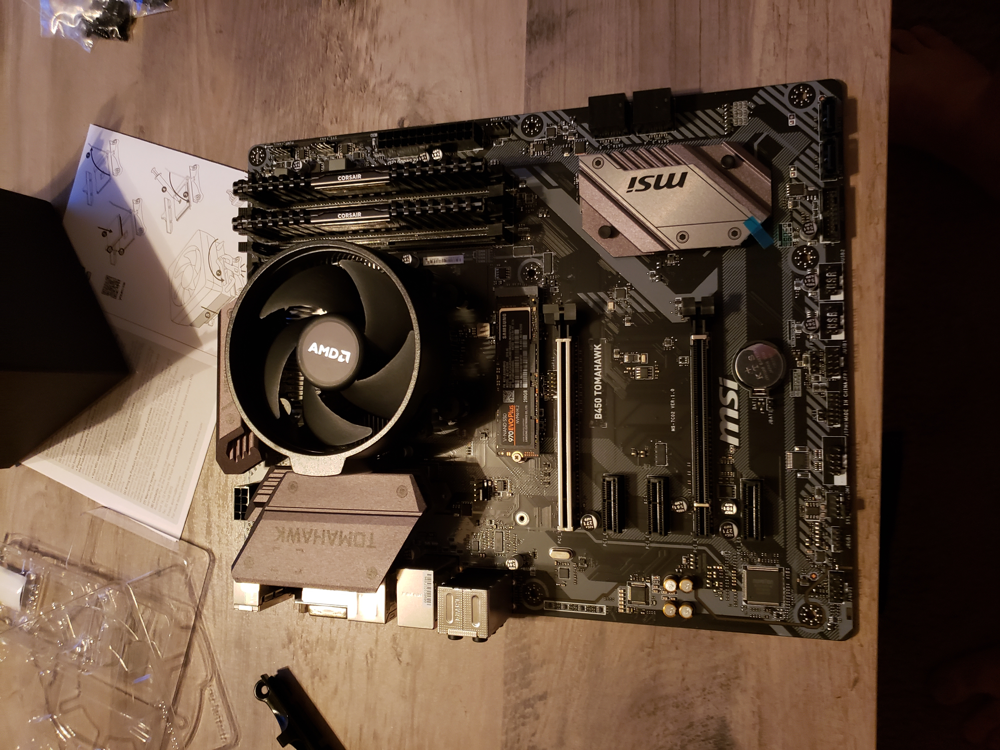
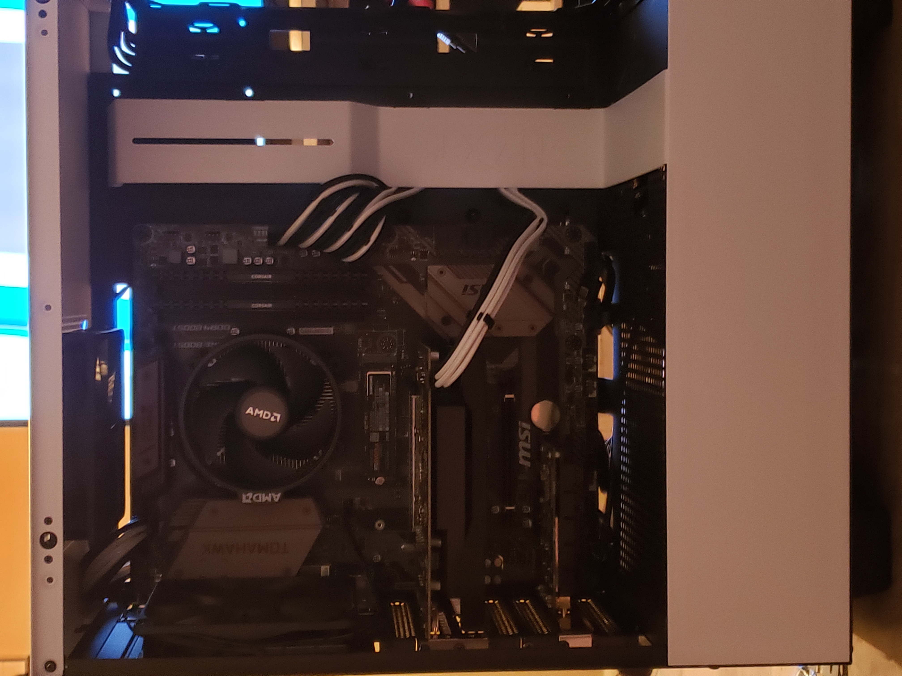
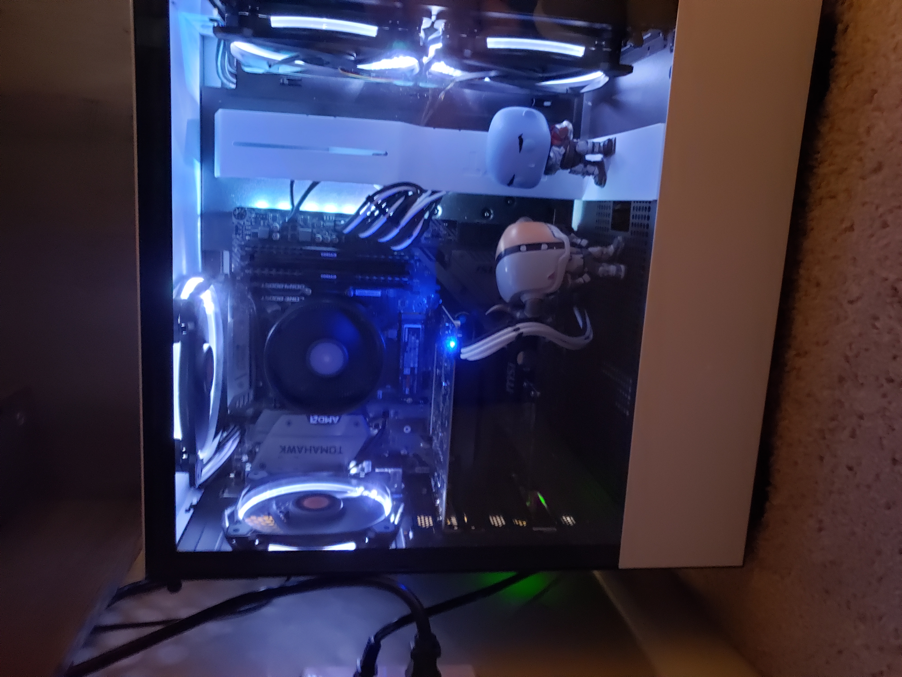

My Custom PC Build
Here we will be discussing my personal pc build that I did last year. This has been my main system for my web development and graphic design work, as well as the gaming that I do occasionally. It has not skipped a beat and has tons of upgradability that I plan on taking advantage of in the near future.
To watch the tutorials that I used when building my pc, check out Paul's Hardware on YouTube.
Picking Your Parts
I chose to build a Ryzen system since I would mostly be using the PC for productivity and the higher core and thread count helps with multi-tasking. Here is a full parts list for my build:
- Case: NZXT H510
- Motherboard: MSI B450 Tomahawk
- CPU: Ryzen 5 2600 (stock cooler)
- GPU: Radeon RX560
- RAM: 16GB Corsair Vengeance LPX 3600mHZ
- Boot Drive: 250GB Samsung 970EVO
- Storage: 1TB Seagate Barracude HDD
- PSU: EVGA 500W
- Cooling: (1) Thermaltake Riing 12, (3) Thermaltake Riing 14
Assemble the Main Components
For the next step I assembled everything outside of the case. I started by installing my CPU into the socket, being sure to line up the triangle on the CPU with the triangle on the socket so that it seats properly. I then installed my boot drive into the m.2 slot just below the CPU, and installed the RAM into furthest slot from the CPU and the second closest slot to the CPU. RAM is installed this way so that you can take full advantage of its speed allowing the motherboard to run in "dual-chanel" mode, meaning it can access both sticks at the same time.
Next, before putting anything in the case I installed the stock cooler for the CPU. It comes with mounting hardware pre-installed and the screws are spring loaded so that it is impossible to overtighten and damage the CPU.
Install in the Case
The next step I did not document with pictures but you need to install the power supply into the case. I pre-routed all of my cables to where they needed to be also, this helps with plugging everything in once the motherboard is installed. I placed the motherboard in the case on the standoffs and screwed it into place. I then plugged in all of my front panel connectors, the 24-pin power connecter on the right side, the 8-pin CPU power cable at the top, as well as the additional SATA cable for my 1TB HDD. I then installed the GPU with it's 6-pin power cable, as well as a PCI-e wifi card since my apartment does not have any ethernet ports.
New Fans
A little later down the line I wanted to increase the cooling of my PC so that I could overclock my CPU and get even more power out of it. I did this by adding 2 140mm fans in the front as intake, installing a better 120mm fan as exhaust, and also an additional 140mm fan at the top for exhaust. I also put some Destiny Funko Pops in the case for some added flair since I have the tempered glass side panel.
I am extremely happy with the way my build turned out, and I am definitely itching to either start upgrading or build again.